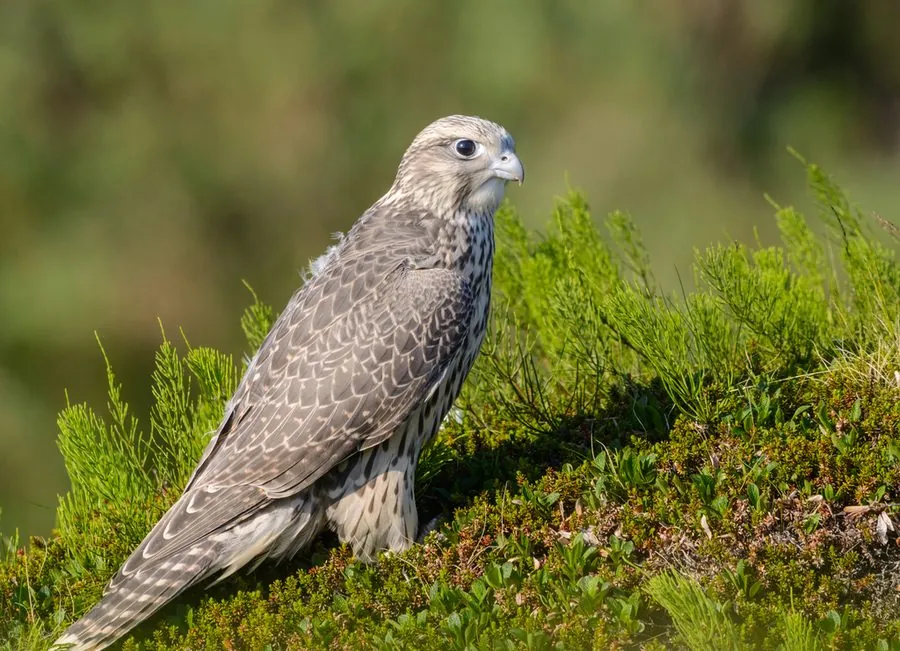

鸟类 · 动物界
矛隼 Falco rusticolus

体型最大的隼类，羽色从雪白到深灰不等，是寒带苔原上的顶级空中猎手，中国古代被誉为“海东青”。
- 分类
- 门脊索动物门纲鸟纲目隼形目科隼科属隼属
- 栖息环境
- 环北极苔原、山地、海岸与河谷，冬季南迁到开阔的农田和草原
- 地理分布
- 环北极地区，北美北部、格陵兰、北欧和西伯利亚，中国东北、华北偶见越冬
- 保护级别
- IUCN 无危（LC）；中国国家二级保护动物
物种志
矛隼体长 48–64 cm，体重 0.8–2.1 kg，翼展 110–160 cm，是体型最大的隼类。它的羽色变化很大，从几乎纯白到深灰褐色都有，白色型在雪地中极难被发现；胸部常有细密横斑，尾羽带横纹。它的翅膀尖长，喙钩曲，黄色蜡膜，脚黄色，飞行时快速有力。
矛隼繁殖于环北极的苔原、山地和海岸，从北美北部、格陵兰到北欧和西伯利亚都有分布，冬季南迁到温带地区，中国东北和华北偶有冬候鸟记录。它们捕食雷鸟、野兔、水鸟和其他鸟类，常在低空快速追击或突然俯冲。繁殖期在悬崖上营巢，每窝产卵 2–4 枚，孵化约 34–36 天。矛隼因羽色华丽、猎技高超，古代在中国东北被尊为“海东青”，是帝王狩猎的珍禽，现今中国将其列为国家二级保护动物。
形态与习性
- 食性雷鸟、野兔、水鸟和其他鸟类
- 体长48–64 cm
- 体重0.8–2.1 kg
- 翼展110–160 cm
- 繁殖每窝 2–4 枚卵，孵化约 34–36 天
- 寿命野外约 20 年
- 羽色从几乎纯白到深灰褐色，变化很大
趣味知识
- 矛隼是体型最大的隼类，白色型在雪地中几乎隐形。
- 中国古代把矛隼称为“海东青”，是帝王狩猎最珍视的猛禽。
- 矛隼的羽色从纯白到深灰差异极大，曾被认为是不同的物种。
- 它们能在低空快速追击雷鸟和野兔，也会突然俯冲攻击。